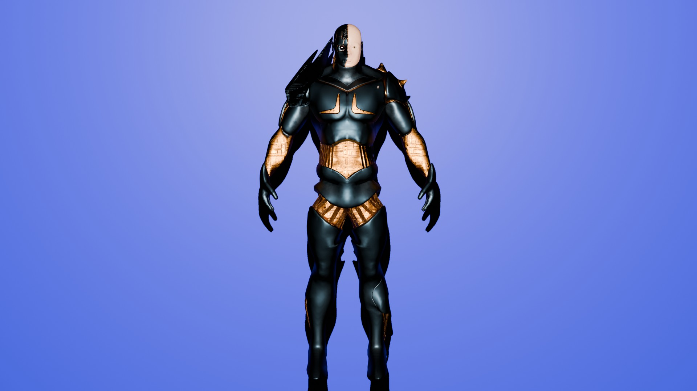
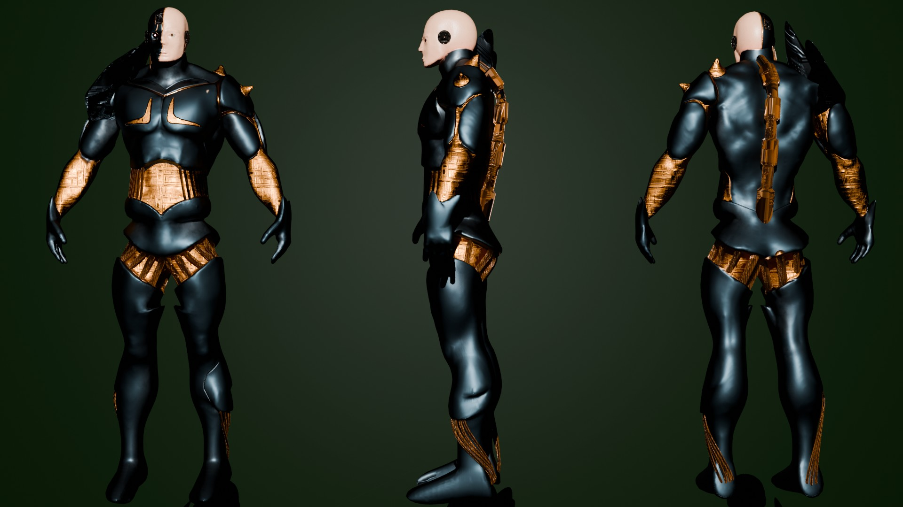
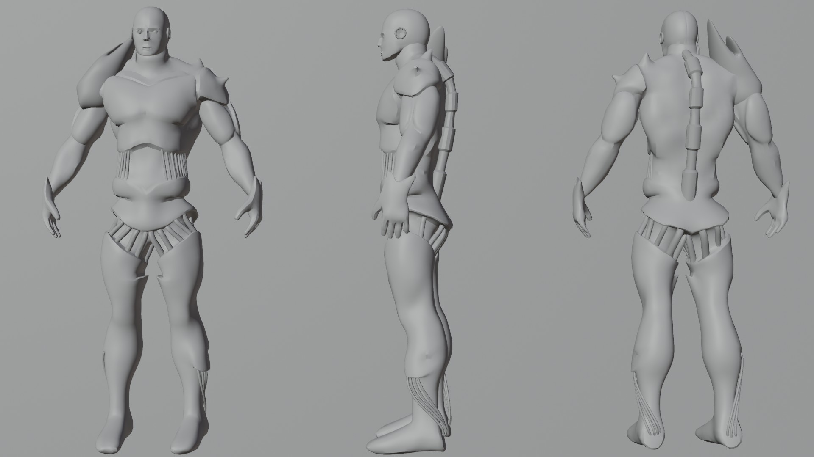
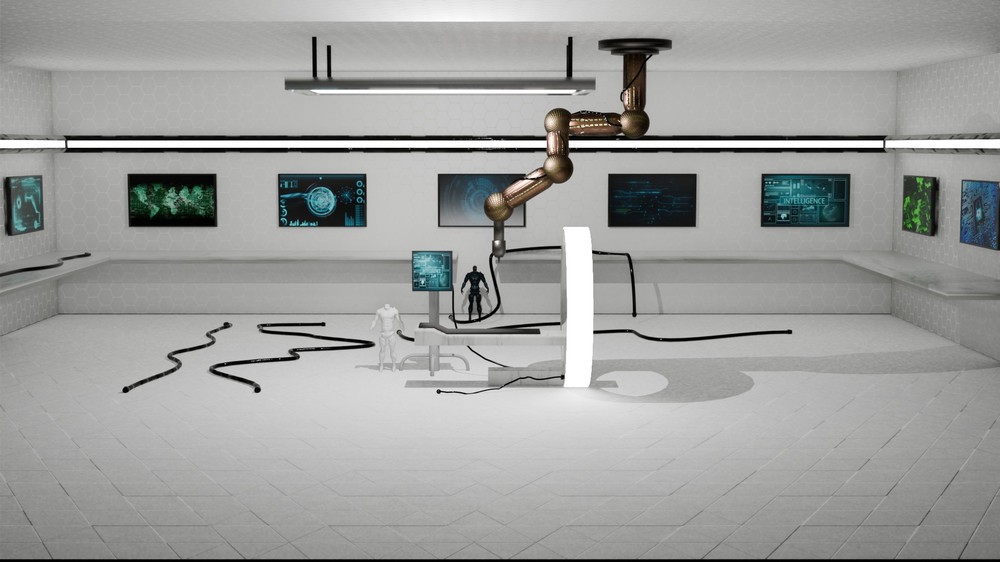
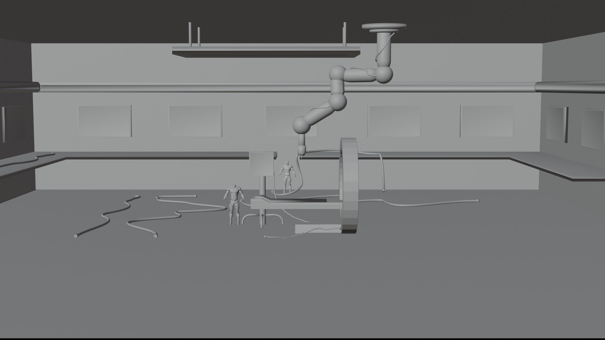
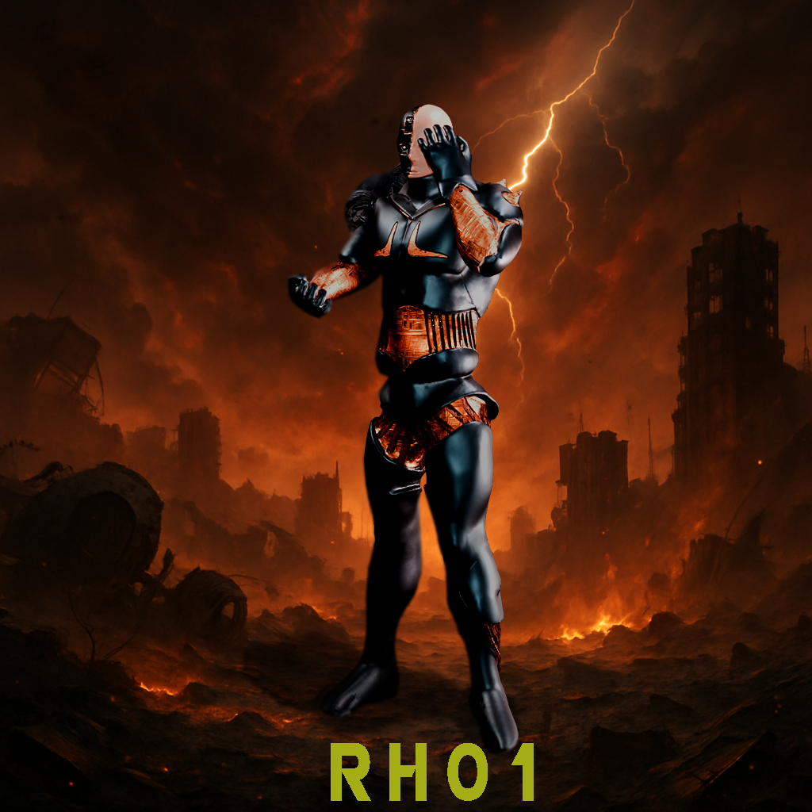

For this project, I created a fully developed 3D robot model along with its accompanying environment.
year
2024
company
none
My role
3d model
The goal was to design a character with clean shapes, proper topology, and details that showcase its functionality. Additionally, I built a themed 3D environment that supports the atmosphere and world in which the robot exists. The process included modeling, texturing, lighting, and rendering, with an emphasis on delivering a polished and visually cohesive result.





